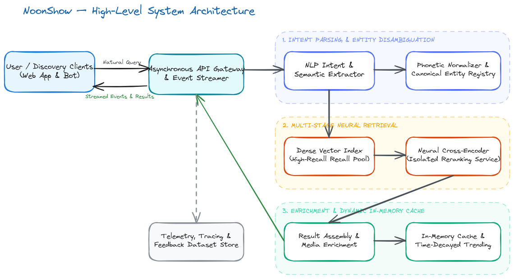

CASE STUDY / AI PRODUCT
Noonshow
An AI-powered movie discovery experience designed for natural-language search.
System architecture

Executive summary
Searching Indian cinema is challenging when people remember plot details rather than titles, or spell artist names phonetically in several different ways. Noonshow is designed as an intelligent, multi-stage hybrid search engine that returns relevant results quickly while handling both cases.
The product combines semantic search, query understanding and relevance ranking in a modular system. Keeping these responsibilities separate makes it easier to improve the experience while keeping searches responsive.
Dual-track query understanding
A query such as “movies directed by Mani Ratnam with Rahman music featuring politics” contains metadata filters and semantic context. Query understanding separates anchors such as director, music and cast from the plot description. Phonetic matching helps connect spelling variants of Indian cinema names, allowing those signals to refine the search.
“Kamal Haasan movie against death penalty”
Technical intent: actor = Kamal Haasan. Plot intent: hero acts as an old grandmother.
Multi-stage retrieval and reranking
Semantic matching provides broad recall over movie plots and synopses, while metadata constraints narrow the candidate pool. A second ranking step then improves the relevance of the results shown to the user.
System overview
| Capability | Approach | Purpose |
|---|---|---|
| Query understanding | Natural-language interpretation and phonetic matching | Connects conversational queries and name variations to useful search signals. |
| Candidate retrieval | Semantic search with structured filters | Finds relevant films from both plot details and known attributes. |
| Result ranking | Multi-stage relevance evaluation | Prioritizes the strongest matches before results are presented. |
| Result experience | Rich movie information and feedback signals | Helps people decide what to watch and supports ongoing product improvement. |
Engineering lessons
- Keeping query understanding, retrieval and ranking separate makes each part easier to improve.
- Clear progress and useful results make search feel more responsive.
- Domain-specific phonetics materially improve metadata precision in regional datasets.
- Combining semantic context with known movie attributes produces more useful results than either signal alone.
What’s next
The next areas of exploration are further improving retrieval quality and using feedback to evaluate and refine the discovery experience over time.